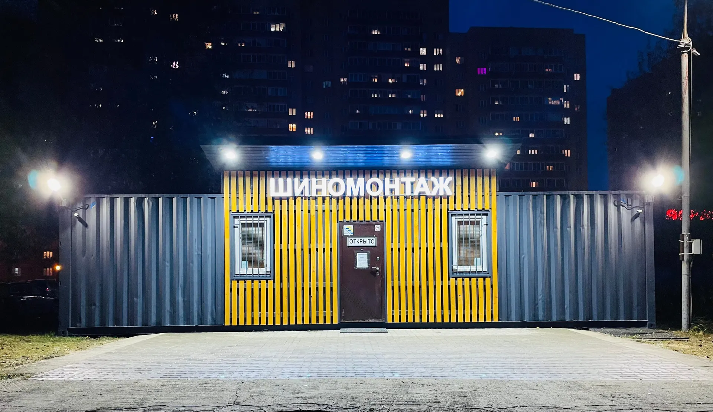
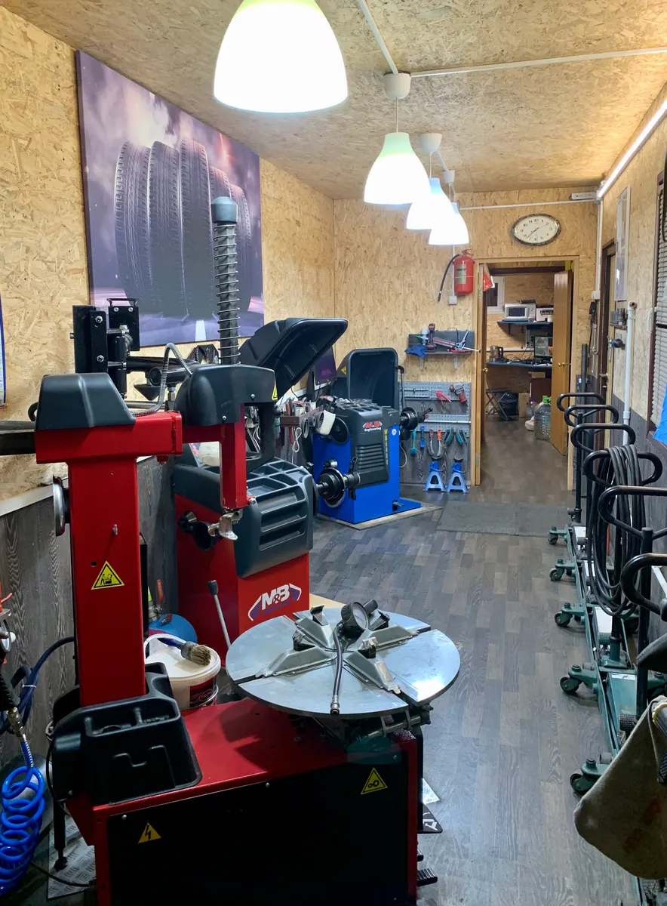
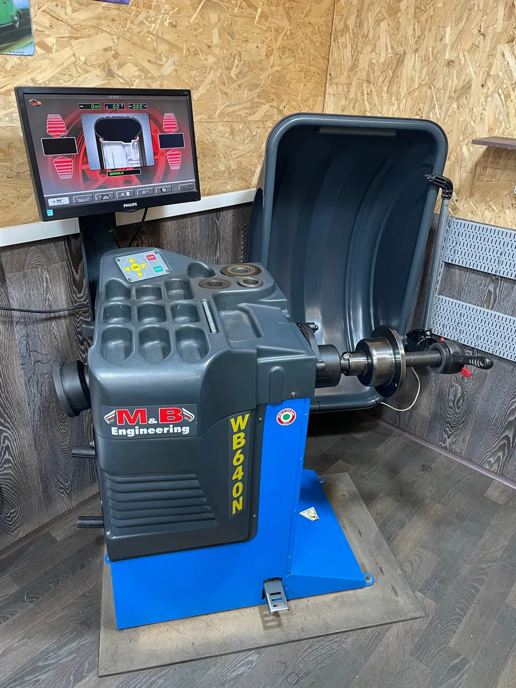
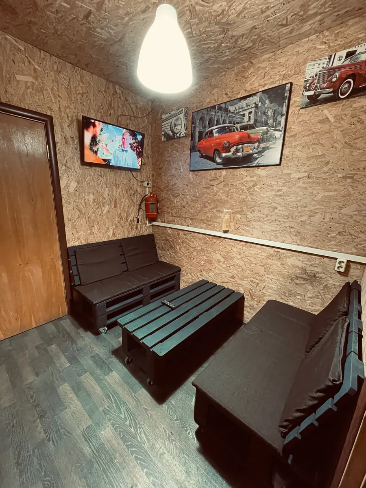

Шиномонтаж · Раменское, Молодёжная, 27вл3
Шиномонтаж в Раменском по записи – к своему времени
Переобувка с балансировкой, динамометрический ключ и замер протектора. Приезжаете к назначенному времени – без очереди.
- 5,0 на Яндекс.Картах – 69 отзывов
- Ежедневно с 09:00 до 20:30
- Переобуть все колёса – 2 200–6 000 ₽

Цены
Цена с карточки на Яндекс.Картах – зависит от радиуса и типа колёс. Точную сумму назовём при записи.
Шиномонтаж
- Переобуть все колёсакомплект из 4 колёс, с балансировкойот 2 200 ₽
- Балансировкауточнить
- Ремонт проколауточнить
- Нестандартные колёсанапример, квадроцикл R10уточнить
Оплата наличными, картой или переводом. Есть гарантия на работу.
Как проходит
- 01
Записались на время
Выбираете услугу, день и время. Работаем только по записи – так нет очереди.
- 02
Приехали к своему времени
По словам клиентов – «к назначенному времени, ±10 мин».
- 03
Переобули по правилам
Чистим посадочные места, медная смазка, затяжка динамометрическим ключом.
- 04
Подсказали по колёсам
Меряем остаток протектора и говорим, если что-то не так с дисками.



За что нас выбирают – по отзывам
По записи – без очереди
«Работают по записи, приезжаешь к назначенному времени, +-10 мин.» – Мария.
Динамометрический ключ
«Используют динамометрический ключ, а не на глаз. Чистят посадочные места.» – Роман Кострюков.
Замер протектора
«При сезонной смене измерили остаток протектора и исходя из показаний распределили колеса.» – Босяк.
Как пит-стоп
«В максимально короткие сроки заменили и отбалансировали резину.» – Artem Sapozhonkov.
Отзывы с Яндекс.Карт
«Отличное место. Хорошее обслуживание, клиенториентированность . Работают по записи, приезжаешь к назначенному времени, +-10 мин. Идеально!!!!»
Мария · 2 апреля 2024
«Буду ездить только к ним. Все четко. Все рассказали, на проблему с дисками указали при замене резины. Сделали все за полчаса.»
Илья · 2 ноября 2025
«Очень ответственно подходят к работе. Делают все очень быстро и при этом качественно. Используют динамометрический ключ, а не на глаз. Чистят посадочные места.»
Роман Кострюков · 20 ноября 2022
Отзывы с карточки на Яндекс.Картах, без правок.
Частые вопросы
Можно заехать без записи?
Работаем только по записи – зато приезжаете к своему времени и не ждёте.
Сколько стоит переобувка?
Все четыре колеса – от 2 200 до 6 000 ₽ в зависимости от радиуса. Точную сумму назовём при записи.
Где подождать?
Есть комната ожидания и Wi-Fi.
Где вы находитесь?
Раменское, Молодёжная улица, 27вл3. Ежедневно с 09:00 до 20:30.
Запишитесь на шиномонтаж к своему времени
- Адрес
- Молодёжная улица, 27вл3, Раменское
- Часы
- ежедневно 09:00–20:30
- Телефон
- +7 (915) 322-06-74